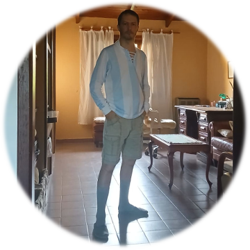
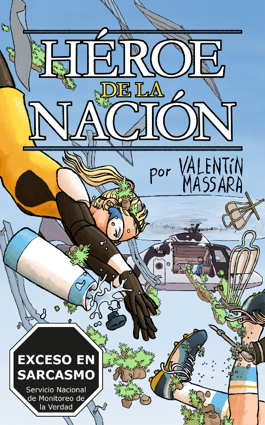

Sobre el autor

Valentín Massara, nacido en Castelli (Bs. As., Argentina) en 1984. Profesor de biología. Escribe y dibuja cosas.
Su escritura se inclina a la ciencia ficción satírica. Se declara a favor de los adverbios, contar cuando hay que contar, y la tercera persona omnisciente (sin despreciar las otras).
Top 3 escritores: Voltaire, Stanisław Lem y Gilbert K. Chesterton.
En 2026 (si los dioses lo permiten) publicará la novela La señorita Clarisa Klein, una historia de origen superheroica que es autoconclusiva y no una precuela de historias posteriores. Con Clarisa Klein, se propone una colección de aventuras autoconclusivas e independientes, al estilo de Sherlock Holmes o Conan el bárbaro.
Contacto: nefelocoxis@gmail.com
Títulos
(por ahora solo uno disponible, pero ¡paciencia!)

Próximamente
La señorita Clarisa Klein
Novela (Kindle y tapa blanda). 242 pp.
Clarisa Klein es una maestra de jardín que a ratos conduce a sus alumnos, a ratos es conducida por ellos. En una visital del jardín a un museo, sufre un pequeño accidente, de los que dan grandes poderes y alguna responsabilidad.
Mientras, un insecto de un tamaño que debería ser ilegal deambula por la ciudad, amenazando la vida y la propiedad, siendo una fuente de problemas tanto para humanos como para sí mismo. ¿Debemos ser éticos, aunque el universo no lo sea? Bueno, no importa por el momento. En el calor de la situación, una oscura agencia estatal busca reclutar a Clarisa para ungirla como una especie de poderosa super… eh, maestra de jardín capaz de abordar la crisis.
En esta historia todo es lo que parece, aunque lo que parece es algo fuera del tarro. Una aventura apta para todo público en la que la ciencia (y el fútbol y la burocracia) son una excusa para el sarcasmo y la fantasía.

Héroe de la nación
Historia corta para Kindle (62 pp.).
Una aventura de Clarisa Klein, el ladrillo volador conocido como Sietecolores en las ocasiones heroicas.
El Gilberto, flamante presidente del pueblo argilandés, recibe la noticia de un atentado en curso y cree que es contra él. Al mismo tiempo, la Selección de Argilandia se juega las eliminatorias contra Perú. Clarisa necesita asegurarse que el presidente llegue al suelo con el menor ruido posible, y los jugadores, al estadio a tiempo para el partido. ¿Podrá Clarisa salvar al zeppelin de la Selección? ¿Sobrevivirá el zeppelin al rescate de Clarisa? ¿Cómo ve el presidente el futuro del maquinismo? La gravedad, ¿es subjetiva? Y lo que Argilandia de verdad se pregunta: ¿El Narigón Mazzoni está para jugar desde el arranque?
Una aventura superheroica en tono paródico, pero en la que el superhéroe es casi la única nota de sensatez en un mundo desbocado.

Próximamente
Retorno al Coronel Rex
Historia corta para Kindle.
La República de Argilandia es un país demasiado ficticio. En los ochenta del siglo XX, el entonces candidato al Nobel de literatura Leandro V. Barroetaveña concedió una entrevista para clarificar su rol en las conspiraciones militares de la década rexista (1960). Además de adentrarse en su relación con el popular coronel Adonis Rex (presidente de la república en el período 1962-69), Barroetaveña nos ofrece un meditado punto de vista acerca de cuestiones políticas y sociales que, para él, son narrativas. La hegemonía rexista se nos muestra como un caso en el cual el sistema conspira contra sus creadores, y los personajes ficticios, contra su autor.
Esta historia de ficción especulativa, que no deja de ser una pieza de humor subterráneo, está escrita en un formato heterodoxo (se encuadra como una entrevista de una revista de la época), pero el curso de la conversación lleva al lector por un set up necesario, un buen desarrollo, algunos giros de trama y un inquietante pay off.